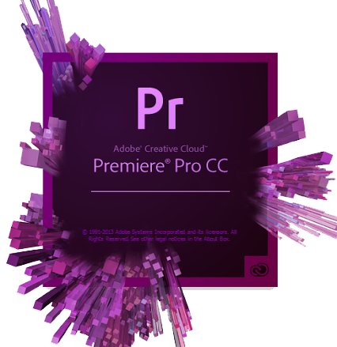

5 Filmen
5.1 Bild Technik

Bildsensor In Digitalkameras erfolgt die Aufnahme eines Bildes über Licht, das auf einen Bildsensor
fällt.
Die
Grösse des Bildsensors ist der Hauptfaktor für die Auflösung eines Bildes.
Die Belichtung des Sensors wird durch drei Faktoren bestimmt Blende, Belichtungszeit,
Lichtempfindlichkeit.
Blende

Die Grösse der Öffnung bestimmt das Ausmass an Licht, das während der Belichtung auf den Sensor fällt.
Je
grösser die Öffnung, desto geringer die Schärfentiefe des Bildes. Der grüne Bereich, ist der scharfgestellte Bereich.
Belichtungszeit
Je nachdem wie lang der Verschluss einer Kamera geöffnet wird, resultiert eine kurze oder lange
Belichtungszeit.
• Kurze Belichtungszeit: Kürzer als 1/125 sec
• Lange Belichtungszeit: Länger als 1/125 sec
• Kurze Belichtungszeiten werden benötigt um Bewegungsunschärfe zu vermeiden.
Lichtempfindlichkeit
Ähnlich wie beim chemischen Film kann der Bildsensor auf eine niedrigere bzw. höhere Empfindlichkeit
eingestellt werden. Höhere Empfindlichkeiten werden erreicht, indem das analoge Signal des Sensors vor
der
Digitalisierung stärker verstärkt wird. Die Empfindlichkeit wird in ISO-Werten angegeben: 100 – 200 –
400 –
800
– 1600. Je niedriger der ISO-Wert, desto schärfer das Bild. Je höher der ISO-Wert, desto mehr
Bildrauschen
entsteht.
Bildrauschen
Als Bildrauschen bezeichnet man die Verschlechterung eines digital aufgenommenen Bildes durch Störungen,
die
keinen Bezug zum eigentlichen Bildinhalt haben. Das Bildrauschen wird durch verschiedene Faktoren
verursacht:
• Qualität des Sensors, z.B. die Pixeldichte
• Qualität der Signalverarbeitung
• Hohe ISO-Empfindlichkeit
• Hohe Sensortemperatur
5.2 Ein guter film
Alles was ein guter Film Benötigt:
- Wenige Worte dafür wiederholt
Durch ständige Wiederholung der Worte, kann sich der Konsument sich besser an den Film
erinnern.
- Lustig, Humor, Wortspiele (sich nicht zu ernst nehmen)
-
Der Spannungsbogen ist ein Wichtiger Bestandteil einer guten Geschichte. Zuerst
beginnen alle
Geschichten
in einer Ruhephase. Die Hauptfiguren folgen ihren Alltag in ihrer normalen
Umgebung. Das ist
die
Zeit der
Einführung. Danach fängt der erst Konflikt an. In der die Hauptfigur aus ihrem
Alltag
herausgezogen
wird
und auf ein Problem reagieren muss. Man muss beachten das die Leser/ Zuschauer
recht schnell
klar
wird,
welches Problem di Hauptfigur hat und welches Ziel die Hauptfigur verfolgt. Damit
fängt man an
Spannung
aufzubauen, denn den Zuschauer werden sich Bewusst, dass die Hauptfigur ihr Ziel
nicht einfach
erreichen
wird und er auf seinem Weg mehrere Hindernisse überwinden muss. Diese Phase nennt
man auch
Konfrontation.
Besonders massive Hindernisse nennt man auch Plot Point. Nach solch einer
Spannungsphase kann
durchaus eine
Beruhigung-Phase eintreten aber nur kurz, sodass die Spannung nicht abbaut. Das ist
eine kurze
Atempause
bevor der Film zu Ende geht. Denn schliesslich sollte man den Höhepunkt des Films
erreichen,
welches am die
schwierigste Aufgabe des ganzen Filmes darstellt. Sobald diese Aufgabe geschafft
wurde, sollte
der
Film
möglichst schnell beendet werden. Da alles was nachher kommt nur langweilig sein
kann.
- Neugierig machen
- Kurzweilig, merkfähig
- Man weiss sofort um was es geht
- Zeitgeist
- Verschiedene Perspektiven/ Bewegungen
- Testimonial, Success Stories
- Spricht Emotionen an
- Detailaufnahmen
- Musik passend zum Gefühl
- Guter Verständnis
- Verschiedene Geschwindigkeiten
- Kunde steht im Mittelpunkt
- Bilder passen zu Gesprochenem
- Nicht übertreiben, nicht zu hochnäsig
- Kernaussage am Schluss
- Besonderes Thema
- Man identifiziert sich fiebert mit
- Spannung steuern mit Sound
- Spiel mit Rhythmen
- Lässt Raum für Interpretation
- Gefühle durch Details
- Wechsel in Raum und Zeit
- Auf das Wesentliche reduziert
5.4 Vor dem dreh Nach dem dreh
Nach und vor dem dreh sollte man die s ding beachten:
1. Akku aufladen
2. Daten importieren redundant(Babck-Up)
3. Beim nächsten Gebrauch kann getrost formatiert werden
6 Post Produktion
6.1 Work Flow
1. Daten von Karte kopieren und Back-Up
2. Ordner Struktur
3. Sichten und benennen
4. Premier pro: Projekt Import
5. Rohschrift
6. Feinschnitt
7. Color Gradin und Animation
8. Laufend: Versionierung und Backup

6.2 Film schnitt Adobe-Premiere Pro
Adobe Premiere Pro ist ein schnitt Programm, welche dazu dient Videos zu schneiden.
Hier ist der Werbe Film von Adobe Premiere Pro
Hier ist ein Video für filmschnitt Anfänger. https://www.youtube.com/watch?v=WwGq_9DVLgo
6.2.1 Film schnitt Regeln
1. Material ordnen und benennen
2. Einfacher schnitt reicht aus
3. Gutes Material generieren
4. Neue Regeln aufsetzen
5. Pause -> frischer blick
6. Feedback einholen

6.3 Animation Adobe-After Effekts
Um professionelle Titel, Intros und Überblendungen in einem Video einzufügen, benutzt man Adobe After
Effekt.
Hier ein Link um einen ersten Einblick auf Adobe after Effekt zu bekommen.
adobe werbe video
ienfürung